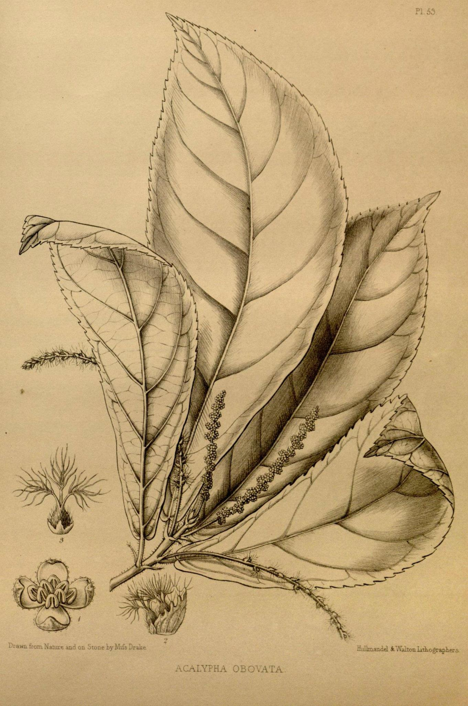

I am a biologist interested in the systematics and evolution of big, poorly-known groups of plants. My research integrates phylogenetic and genomic analyses with taxonomy and the use of specimens in the world’s herbaria. This enables the effective study of big groups of plants, at a global scale and in a short time, and demonstrates multidisciplinary approaches can accelerate the study of tropical biodiversity.
My current main research focuses on the genus Ipomoea, with especial attention to sweet potato (I. batatas (L.) Lam.) and the group of species that are its close wild relatives. I also investigate the evolution of edible storage roots and other evolutionary events in wild Ipomoea species, which in turn helps understand sweet potato’s origin and evolution. This work is complemented with the study of herbarium specimens, archaeological remains and historical records associated with sweet potato to better understand its domestication and ancient distribution. I collaborate with researchers in the UK, Spain, Peru, Mexico, and the USA.
I also work on the systematics of other neglected tropical plant groups and have worked on several biodiversity conservation projects, resulting in the completion of the taxonomic review of Acalypha for South America, the identification of all priority areas for plant conservation in Spain, and the discovery of 7 plant species and 4 subspecies new to science.
Ipomoea maurandioides, photograph by M.T. Martínez (2019)
I am part of a team that has devoted the last decade to a monographic study of Ipomoea. We have studied the taxonomy of this plant genus alongside its diversification patterns and evolutionary history.
Ipomoea is a megadiverse genus in the morning glory family (Convolvulaceae). It is the largest genus in the family and one of the largest genera of Angiosperms. Ipomoea contains approximately 810 species and is present in all tropical and subtropical regions of the world. The most famous member of the group is Ipomoea batatas, the sweet potato, one of the most widely consumed crops and a staple for many.
When we started this project, the genus had never been comprehensively monographed. In fact, the only global taxonomic review of the genus was published by Jacques Denys Choisy more than 170 years ago, in De Candolle’s Prodromus, and included just 282 species. In addition, there had been many taxonomic studies but these accumulated as much error as useful information.
Our work, led by Professor Robert Scotland and John Wood, has produced important results pertaining to the taxonomy of Ipomoea and the origin and evolution of the sweet potato. Our results have clarified sweet potato’s origin and evolution, ending with decades of uncertainty. We have identified the wild species that are sweet potato’s closest relatives, as well as other evolutionary events that explain today’s sweet potato diversity. A major contribution was the discovery that the edible roots in sweet potato are not the result of domestication but a trait that predisposed the species for cultivation, triggering a change of paradigm in sweet potato research. In addition, we have published the most comprehensive molecular phylogenies of the genus Ipomoea to date, as well as a monograph of all 425 species of Ipomoea in the American continent —the first such work in over 170 years. More on this project can be consulted through the project website, ipomoeaproject.org

Acalypha obovata Benth. (The Botany of the voyage of H.M.S. Sulphur, 1836-42)
Acalypha is the third largest genus in the Euphorbiaceae family. Most species in this genus won't catch someone's eye at first, but once you know how they look, you will see they appear in most tropical and subtropical places of the Planet.
Several new species of Acalypha are described every year, especially in the African continent and Madagascar. Some especies of the genus in the American continent are better known, but most are understudied. Several species are known from a single specimen.
The aim of this ongoing project is to study the diversity existing within the genus at a global scale. We combine the morphological study of herbarium specimens with molecular and ecological studies.